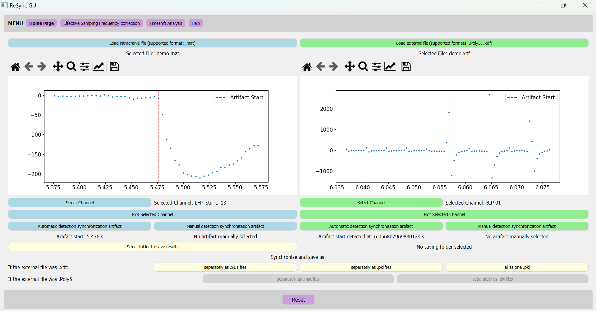
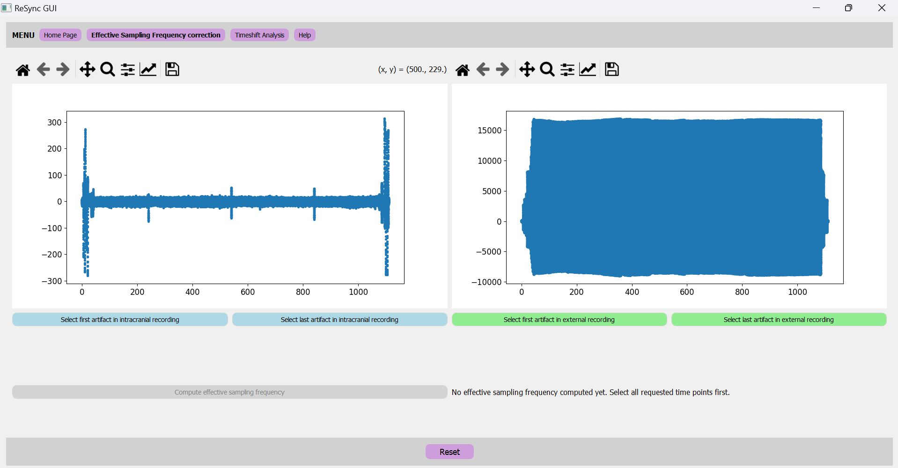
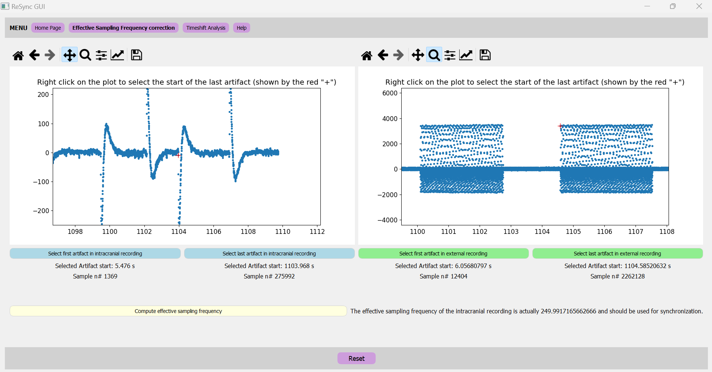

General Information
ReSync GUI is a Python Graphical User Interface (GUI) for synchronizing intracranial data from Deep Brain Stimulation (DBS) electrodes with external data. It is designed to be user-friendly and to facilitate the synchronization process. The GUI is built using the PyQt5 library and (should be) compatible with Windows, MacOS, and Linux operating systems. It is open-source and can be freely downloaded and modified by users.
Supported data formats:
ReSync GUI synchronizes data from DBS electrodes ("intracranial data") with external data.
The supported data formats are:
- For the intracranial data: .mat
The GUI is designed to be used on files preprocessed with the perceive toolbox. This toolbox loads the .json file recovered from the clinician recording tablet after a recording session, and generates BIDS-inspired subject and session folders with the ieeg format specifier. All time series data are being exported as FieldTrip '.mat' files. - For the external data: .xdf, .Poly5.
- The .Poly5 format is the output format of TMSi data recorder
- The .xdf format is the output format of Lab Streaming Layer (LSL)
Supported saving formats after synchronization:
The synchronized data can be saved in the following formats:
- If the input format was .Poly5:
- .mat
- If the input format was .xdf:
- .SET
- .pkl
Installation
- Clone the repository: git clone https://github.com/juliettevivien/Resync_GUI
- Navigate to the local version of ReSync-GUI and create the virtual environment
- Manually, using anaconda prompt: follow the commands from Create virtual env.txt
- Using pip: pip install -r requirements.txt
- Using Conda: conda create --name
--file requirements.txt - Activate the virtual environment using the command: conda activate env_name
- Run the GUI using the command: python sync_gui_clean.py
Usage
How to use the GUI.
- Open the GUI by running the command: python sync_gui_clean.py
- Load the intracranial data by clicking on the "Load Intracranial Data" button.
- Load the external data by clicking on the "Load External Data" button.
- For each data type, select the channel containing the synchronization artifacts. See the synchronization protocol for more information about how to create the artifacts during the recording. You can plot the channel to make sure you see the artifacts.
- Detect the first artifact, either by using the automatic or the manual method. See on the figure 1 below which sample should be detected as the start of the artifact for a reliable synchronization.
-
Before saving, you can assess the "timeshift", i.e. you can plot the
synchronized data together and verify if the last artifact is also aligned.
Checking the timeshift is an important step to ensure that there was no data loss
during the recording.
- If the absolute value of the timeshift is higher than 150ms, it might be a good idea to check for packet loss in the intracranial data.
- If the absolute value of the timeshift is smaller than 150ms, but still higher than 10ms (see figure 2 for an example), it might be a good idea to adjust the effective sampling frequency of the intracranial data.
- IMPORTANT: do NOT adjust the sampling frequency if the timeshift is >150ms because this is a sign of packet loss, not of inaccurate sampling frequency. You should first look for where the missing packets of data are, replace them by NaNs, then synchronize again and only then you can correct the sampling frequency.
- To calculate the effective sampling frequency of the intracranial data, you can click on "Effective sampling frequency correction". In this window, both the intracranial and the external channels are plotted (see figure 3 below for an example). You have to detect manually the first and the last artifact in each channel (see figure 4 below for an example). The effective sampling frequency is calculated the number of samples between the two artifacts (in the intracranial signal) divided by the time difference between the last and the first artifact (in the external signal). Once calculated, this "effective" sampling frequency is automatically applied to the intracranial file. Please reselect the first artifact in the intracranial data in the home page to apply the correction before saving. You can also plot the corrected data in the timeshift analysis window to check if the synchronization is correct.
- Once the first artifact has been detected in both files, you can choose the fileformat in which you want to save the synchronized data (and a folder to save the results).
Examples
Figure 1: Screenshot of the GUI's Home Page.
On the left side is the pannel about the intracranial recording, on the right side is the pannel for the external recording. In this example, artifacts were selected automatically by ReSync and the selection is correct:
- Intracranial data: the point selected as the start of the artifact should always be the last sample before the amplitude drops (or increases when the polarity of the signal is reversed compared to this example)
- External data: the point selected as the start of the artifact shoud always be the first highest sample after the amplitude changes (or the first lowest sample when the polarity of the signal is reversed compared to this example)
Figure 2: Screenshot of the GUI's Timeshift Analysis page.

In this example, artifacts were mnually selected in the intracranial and external recordings. The timeshift is calculated as the difference between the last artifact in the intracranial data and the last artifact in the external data. In this example, the timeshift is 36ms, which means that the sampling frequency of the intracranial data should be corrected before saving.
Figure 3: Screenshot of the GUI's Effective Sampling frequency window.
On the left side is the pannel about the intracranial recording, on the right side is the pannel for the external recording. The signal of both channel is automatically plotted as a scatter plot to facilitate manual selection of the first and last artifact in each channel.
Figure 4: Calculation of the effective sampling frequency of the intracranial signal.
The red crosses show the manual selection of the last artifact in each recording: it should correspond to the beginning of the last stimulation pulse in both channels. The first artifacts were also previously selected. The effective sampling frequency is calculated as the number of samples between the two artifacts in the intracranial signal divided by the time difference between the last and the first artifact in the external signal. In this example, the effective sampling frequency is 249.9917165662666Hz.
Synchronization Protocol
The synchronization protocol is a set of guidelines to help you create synchronization artifacts during the recording. These artifacts are used later on to synchronize the intracranial data with the external data thanks to this GUI.
Steps:
- Prepare the recording: Setup the BrainSense Streaming mode. Deactivate the ramp option of the stimulation on the clinician recording tablet. Keep the stimulation ON, but set it at 0mA bilaterally.
- Start the recording: Start the recording of the intracranial data and the external data at the same time.
- Generate the artifacts: In the clinician recording tablet, increase the stimulation amplitude to 1mA unilaterally in one step. This will generate a clear artifact in the intracranial data, which will be used for synchronization. Try to always perform the artifact on the same side.
- Perform your recording After generating the artifact, decrease the stimulation amplitude to 0mA bilaterally if you are recording in DBS OFF, or slowly ramp up the stimulation back to the clinical settings if recording in DBS ON.
- Repeat the artifact at the end: Repeat the stimulation pulses at the end, before stopping the streaming. (Do not forget to put both hemispheres at 0mA before doing the pulses, and do the pulses ON THE SAME SIDE as the first artifact).
- Stop the recording: Stop the recording of the intracranial data and the external data.